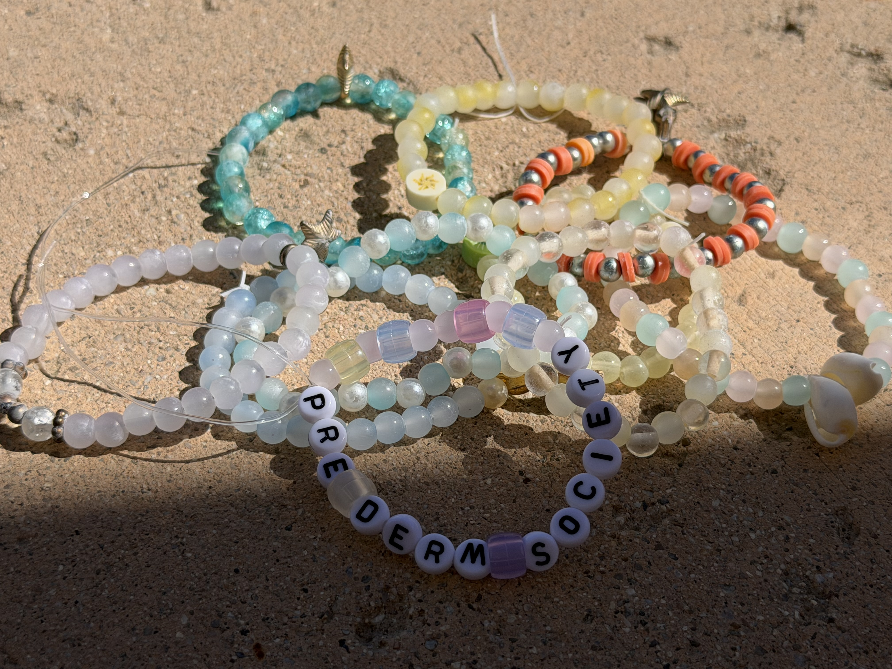
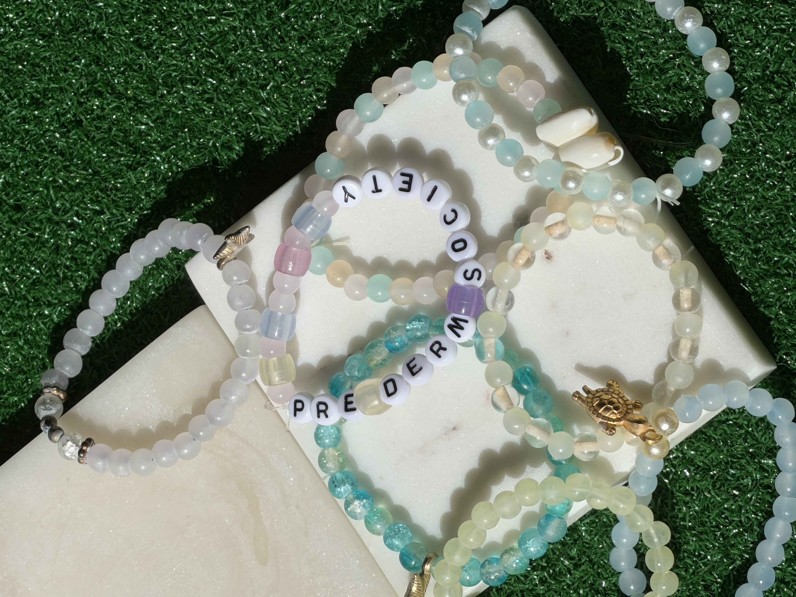

Why we started.
Our interest in dermatology started when we were young. Watching our mom enjoy her work as a dermatologist and seeing how she helped people made us interested in medicine and dermatology too.
Cancer has also been present in our family, which made us more aware of how important healthcare and early awareness can be. Those experiences made us want to learn more about medicine and find ways to help other people whenever we can.
We actually started a dermatology club in middle school, and that interest has continued to grow. As we learned more about dermatology, skincare science, and healthcare, we wanted to create a space where other students could learn with us too.
That is why we created Pre-Derm Society. We want to share our interest in dermatology and medicine, spread health awareness, and encourage other students to explore healthcare and discover what they are passionate about.


